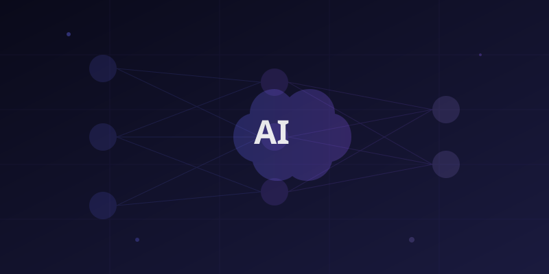

GenAI / NLP AmazonEmployee Attrition Prediction via GenAI
Fine-tuned transformer-based BERT LLM for sentiment analysis on employee feedback data. Built end-to-end pipeline from text ingestion to real-time inference, enabling proactive HR interventions that reduced churn by 12%.
Architecture
Employee Feedback
BERT Fine-tune
SageMaker
HR Dashboard
BERTPyTorchHugging Face
SageMakerPythonTransformers
12% reduction in employee churn